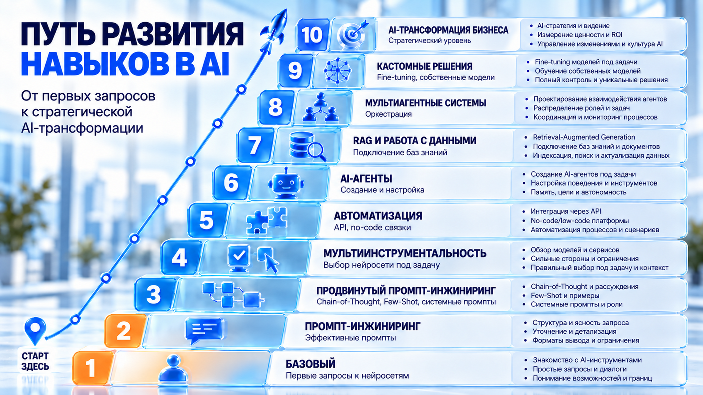

Наведите на ступень, чтобы открыть описание

Нажмите на ступень, чтобы закрепить описание
Для всплывающих описаний включите JavaScript в браузере. Все уровни и пояснения остаются видны на изображении.